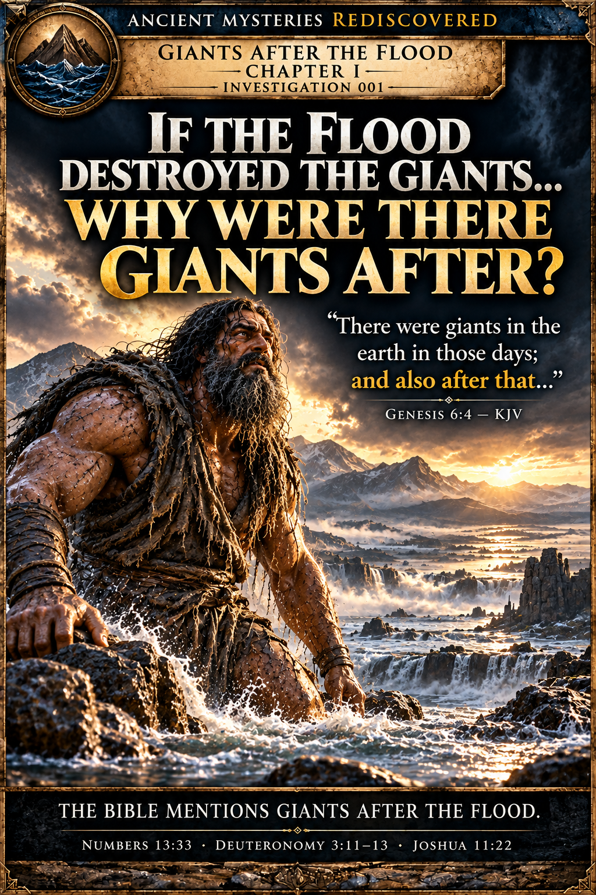

Genesis
Genesis 7 names Noah and those with him in the ark as the survivors. It does not narrate Og surviving the Flood.
Read Genesis 7 ↗Giants After the Flood · Investigation 001

A giant's legend draws us in. Ancient texts complicate the story. Real archaeology deepens the mystery.

Prologue
The apparent contradiction at the center of the investigation: Genesis describes the destruction of life outside the ark; a much later Jewish tradition names Og as an exception.
The Flood was supposed to destroy the old world. Yet centuries after Noah, the Bible introduces a king whose name would become inseparable from the legends of giants. His name was Og. He ruled Bashan, a region east of the Sea of Galilee, and the biblical account identifies him with the remnant of a mysterious people called the Rephaim. His bedstead, described as nine cubits long, was so extraordinary that its dimensions were preserved in Scripture. But the strangest part of Og's story appears elsewhere. In later Jewish tradition, Og did not simply descend from an ancient race. He survived the Flood itself. How could a giant have survived a catastrophe said to have destroyed the world? And why did storytellers preserve his name long after his kingdom disappeared? To investigate, we must begin with the ancient text—and follow the evidence into the mountains of Bashan.
Genesis 7 names Noah and those with him in the ark as the survivors. It does not narrate Og surviving the Flood.
Read Genesis 7 ↗A later interpretive work adds an Og survival tradition. It is not part of the Genesis account.

Chapter I
The biblical narrative introduces Og as king of Bashan, ruling from Ashtaroth and Edrei. When the Israelites approached his territory, Og marched out with his forces to confront them. The account ends with his defeat. But Deuteronomy adds an unusual detail: Og was among the remaining Rephaim. Then it describes an immense bedstead associated with him, measuring nine cubits by four cubits.
13.5 ftApproximate length
6 ftApproximate width
Calculated using an illustrative 18-inch cubit; actual ancient cubit lengths varied.
Was this the bed of an exceptionally large man? A royal object intended to display power? Or a funerary furnishing remembered for its extraordinary size? The Hebrew term is commonly translated as bedstead, though some translations interpret it as a sarcophagus. We cannot establish Og's actual height from the dimensions of the object. But the passage tells us something important: the ancient writers wanted readers to remember Og as extraordinary.
Evidence: Numbers 21:33–35; Deuteronomy 3:1–13, especially 3:11.
Limit: the chapter does not connect Og to Noah's ark.
Chapter II
The survival account belongs to a later layer of tradition, not to Genesis.
Genesis describes the Flood as an overwhelming destruction, with Noah, his family, and the creatures aboard the ark preserved. Og is not identified as a survivor in the Genesis Flood narrative. Yet a later Jewish work, Pirkei de-Rabbi Eliezer, preserves a remarkable exception. Og, the king of Bashan, is said to have survived outside the ark. The storyteller connects him directly to the Flood, offering an explanation for how a figure associated with the ancient Rephaim could have lived into a later age. The account is extraordinary precisely because it appears to cross the boundary between two eras: the world before the Flood and the world after it. But this is not a forgotten verse of Genesis. It is a later interpretive tradition, preserving how Jewish storytellers developed the biblical narrative. And the tradition becomes stranger still.
No Og survival episode.
An explicit Og survival episode.
Chapter III
Imagine the Floodwaters rising around the ark. Inside are Noah, his family, and the animals. Outside, according to the later tradition, is Og. Pirkei de-Rabbi Eliezer describes Og sitting on a piece of wood beneath the ark's gutter. He pledges service to Noah and his descendants. Noah, in turn, makes an opening through which he supplies Og with food. The image is unforgettable: a giant surviving the destruction of the old world through an extraordinary arrangement with Noah. Yet it is the story's purpose that deserves investigation. The author uses Og to explain an apparent tension: how could someone remembered as a remnant of the Rephaim still exist in the biblical world after the Flood? The legend bridges that gap. Og becomes a living connection between the lost world and the new one. The tradition does not establish that the event historically occurred. It reveals how ancient and medieval interpreters expanded inherited stories to answer questions left unresolved by the biblical narrative.
Primary source: Pirkei de-Rabbi Eliezer, Chapter 23.
Pirkei de-Rabbi Eliezer 23 preserves a later account in which Og survives alongside the ark. The page must present this as later literature, not as Genesis and not as archaeological evidence.
Read the source at Sefaria ↗
Chapter IV

Og's kingdom was not remembered as a lonely giant standing on an empty mountain. Deuteronomy describes a substantial territory: Bashan, with fortified settlements and sixty cities in the region of Argob. The account presents Og as a ruler commanding a kingdom, not merely a legendary creature. That distinction matters. Because if we imagine Og only as an enormous warrior, we miss what made him formidable in the story: he was a king with territory, cities, and an army. The narrative associates this kingdom with the Rephaim. Elsewhere, biblical texts refer to the Rephaim as ancient inhabitants of particular regions. But the term also appears in poetic descriptions of the dead. Are these references connected? Do they reflect different meanings of an ancient name? Or did stories of extraordinary ancestral peoples gradually merge with ideas about departed rulers? These questions cannot be answered by simply declaring that all Rephaim were giants. They require us to follow the name across different texts, languages, and centuries. And they lead us toward the stones of Bashan.
Primary texts: Deuteronomy 3:4–13; Genesis 14:5; Isaiah 14:9; Job 26:5.
Deuteronomy 3 describes numerous settlements in Og's realm and characterizes fortified towns with walls, gates, and bars. It also calls part of Bashan “the land of Rephaim.”
Verify the passage ↗Limit: a modern landscape photograph does not identify a particular biblical settlement.
Chapter V · Authentic archaeology
These places are real. The proposed connection to Og or the Rephaim is not established by archaeology.
Across the Golan and neighboring ancient landscapes, enormous stone monuments survive from prehistoric societies. Among the most remarkable is Rujm el-Hiri, a complex of concentric basalt walls more than 150 meters across. At its center stands a substantial stone cairn containing a burial chamber. The monument's date and original purpose remain debated. Archaeologists have proposed ceremonial, funerary, astronomical, and other interpretations. The central burial activity may reflect a different phase of use from the construction of the surrounding circles. And in 2026, researchers published a reassessment identifying a wider regional tradition of large circular stone structures. Rujm el-Hiri was not necessarily the isolated architectural wonder it once appeared to be. The mystery had grown beyond one monument.
At the separate Shamir Dolmen Field, excavators investigated a massive burial monument capped by a stone weighing approximately 50 tons. Beneath it were fragmentary human remains from multiple burials, including adults and children. Above the burial area, researchers documented fourteen engraved forms. The monument demonstrated sophisticated stone construction and substantial collective labor. The published study does not report evidence of exceptional stature among the people buried there. And there is no established connection identifying either Shamir or Rujm el-Hiri as a monument built by Og. But these discoveries reveal something remarkable in their own right. Ancient communities could construct enormous monuments to commemorate, honor, or bury their dead. Their achievements need no imaginary giants to be extraordinary.
At Rujm el-Hiri, the central chamber raises another question. Could the monument's builders—or people who used it later—have attached ceremonial significance to the sun? Some researchers have proposed astronomical alignments, while subsequent studies have challenged aspects of those interpretations. Our most provocative possibility is therefore a question, not a conclusion: Could light entering an ancient chamber have symbolized a moment when the living encountered the memory of their ancestors? The evidence does not establish that this happened at Rujm el-Hiri. But the possibility opens a new avenue for comparing ancient architecture with beliefs about death and remembrance.

Published research describes a central tumulus and multiple concentric basalt walls. Its chronology, development, and function remain subjects of study; astronomical and other interpretations must not be presented as settled.
2026 PLOS ONE reassessment ↗1998 excavation and phase study ↗2024 remote-sensing discussion ↗
Research documents a monumental multi-burial dolmen within a field of more than 400 structures. The published study reports a massive capstone, a central chamber, human remains, and engraved rock art.
2017 PLOS ONE study ↗Evidence boundary: neither monument is verified as the work of Og, giants, or the Rephaim. The Shamir dolmen is not beneath Rujm el-Hiri.

Chapter VI
The name Rephaim takes an unexpected turn in ancient literature. In Isaiah 14, departed rulers are imagined stirring in the underworld to greet a fallen king. The Hebrew word used for these shades is repha'im. This is not simply a description of giant warriors. It is a poetic vision of the dead. Meanwhile, ancient Ugaritic texts refer to figures called rp’um, associated in scholarly interpretations with deceased or exalted ancestral figures. Their precise identity and relationship to the biblical Rephaim remain debated. A separate tradition, preserved in 1 Enoch 15, describes the spirits of dead giants continuing to trouble the earth. These accounts should not be combined into a single historical event. They belong to different literary and religious settings. But together they reveal an intriguing pattern. Ancient storytellers repeatedly explored the possibility that powerful beings remained significant beyond death. For the biblical Og, the story ends with his defeat. For the later storytellers, his name continued to live. For the Rephaim, the very meaning of the name opens a deeper mystery. Was it once associated with extraordinary peoples, departed rulers, or different traditions that later readers connected? That is a question worth investigating on its own.
These passages place rephaim language in the realm of the dead or shades, a different textual setting from Deuteronomy's living people.
Isaiah ↗ Job ↗Comparisons with Ugaritic texts are scholarly interpretations. The identity and status of the rp'um, and their relationship to biblical traditions, remain debated.
KTU 1.161 study ↗ Open-access comparison ↗1 Enoch develops a separate tradition concerning the spirits of the giants. It should not be collapsed into the biblical Og account.
Public-domain translation ↗Chapter VII
The question that began our investigation was simple: Did a giant escape Noah's Flood? The evidence gives us a more interesting answer than a straightforward yes or no. The biblical narrative identifies Og as a king associated with the Rephaim. A later Jewish tradition explicitly tells the story of his survival outside Noah's ark. That tradition is evidence of ancient religious storytelling—not independent proof that Og lived through a historical global Flood. Archaeology reveals extraordinary stone monuments in the broader region, but it does not establish that Og built them or that giants inhabited them. And the Rephaim traditions open another question entirely: how did ancient peoples understand powerful ancestors, departed rulers, and the world of the dead? We began with a king. We discovered a survival legend. We entered an ancient landscape filled with monumental stones. And we found a name that could lead from stories of formidable peoples into poetry about the underworld. Perhaps the greatest mystery is not whether Og escaped the Flood. It is why his story refused to disappear.
Deuteronomy remembers Og as king of Bashan and associates him with the Rephaim.
Pirkei de-Rabbi Eliezer narrates Og's survival alongside the ark.
Rujm el-Hiri and the Shamir dolmens are genuine ancient stone monuments studied by archaeologists.
No verified archaeological evidence shows that Og survived the Flood or that giants built either monument.
We don't retell their entire lives. We show why their stories survived.
INVESTIGATION 002
What if the ancient stone circle wasn't built to keep something out—but to let something return?
We follow the Rephaim from ancient kings and ancestral traditions into the mysterious realm of the dead.
Speculative artistic reconstruction Conceptual artistic reconstruction. No evidence establishes an underworld gateway at Rujm el-Hiri.
Owner-approved AI-generated cinematic artwork — Door Beyond, Investigation 001. Fictional interpretation; not documentary or archaeological evidence.
Sources, credits & boundaries